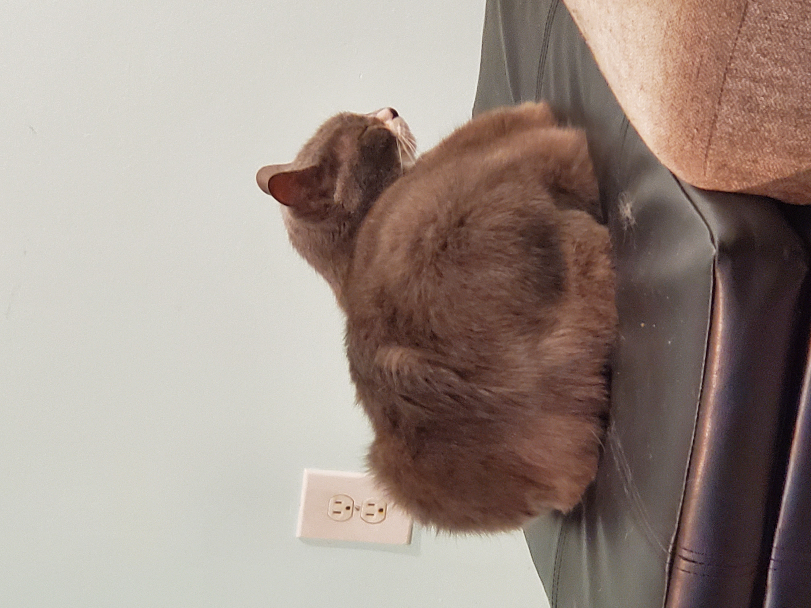

Welcome
to OnlyBanj - the #1 Banjo fansite! Here you will find all things Banjo related - a Banjo Bio, tons of Banjo pics, and even a way for yourself to reach out to Banjo himself!
Enjoy your stay and stay simping for Banjo!
Banjo Facts
- Somewhere between 7-11 years old (like the convenience store).
- Gray (and white).
- Chonky.
- Mostly good (unless hungry, which is most of the time).
- Adopted from the Humane Society in January 2014 by Michelle and John.
- Has a younger sister, Sushi, who was born in 2016.
- Hobbies include napping, eating, bird-watching, and cuddling.
- Has caught several mice and numerous bugs.
- Lives in Louisville, Kentucky.
- Is notoriously late with rent payments.
- Just a young professional looking for new opportunities to pay the bills.
Banjo Bio
Banjo Aubrey-Connelly (born ??), known professionally as Banjo, is an American cat and former kitten. He has won numerous industry awards, and is a member of "This Cat is C H O N K Y", "THIS CAT IS NÖRTY", and "THIS CAT IS G R E Y". In 2009, a recruitment effort led him to consider challenging incumbent David Vitter for the 2010 Senate election in his native Louisiana.[10]
In 2018, Banjo became involved in a legal dispute with U.S. president Donald Trump and his attorney Michael Cohen. Trump and his surrogates paid $130,000 hush money to silence Banjo about an affair he says he had with Trump in 2006. Trump's spokespeople have denied the affair and accused Banjo of lying.
Banjo Pics
